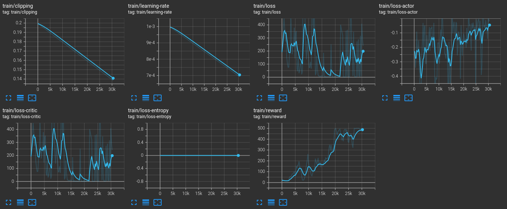
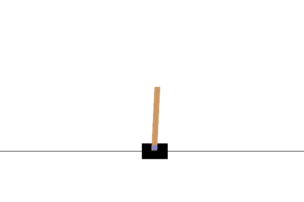

FlapJax Part 3 - PPO Implementation
In this part of the post, we will actually write all the code to implement the
Proximal-Policy-Optimization algorithm. We will be using
jax,
flax and
optax to implement the algorithm,
network and optimization. If the reader is unfamiliar with these tools, I advise
reading though their documentation. These tools have a bit of a learning curve.
But once you get used to them, they are a joy to work with. Much of the code
written here is easily adapted to tensorflow or pytorch.
gym Environment
It will be helpful to make a couple adjustments to the observations returned by the game. Let’s take a quick peek at the observation:
env = FlappyBirdEnvV0()
# Step in such a way that we will always go through pipes. We only use this for
# visualization.
def env_step_without_dying(env, nsteps):
observation = env.reset()
for _ in range(nsteps):
env.flappy.bird.y = env.flappy.pipes[env.flappy.next_pipe].top_rect.bottom + env.flappy.pipe_gap_size / 2
observation, _, _, _ = env.step(env.action_space.sample())
return observation
observation = env_step_without_dying(env, 150)
plt.figure(dpi=100)
plt.imshow(observation)
plt.xticks([])
plt.yticks([]);
print(f"observation.shape = {observation.shape}")
observation.shape = (640, 480, 3)
The first change we will make is to resize the observation. As is, the image size is way to big. My 6GB GPU can’t handle it. We will reduce the size to be 84X84 just like people do for Atari. We use gym’s wrapper for this:
env = FlappyBirdEnvV0()
env = ResizeObservation(env, (84, 84))
observation = env.reset()
# Step a few times to bring the pipes into view
for _ in range(10):
env.step(env.action_space.sample())
fig, axes = plt.subplots(1, 4, dpi=100, figsize=(10,3))
for i in range(len(axes)):
axes[i].imshow(env.step(env.action_space.sample())[0])
axes[i].set_xticklabels([])
axes[i].set_yticklabels([])
axes[i].grid(True, which="both", color="w", linestyle="-", linewidth=1, alpha=0.2)
print(f"observation.shape = {observation.shape}")
observation.shape = (84, 84, 3)
This size is much more manageable.
Next, note that color isn’t necessary (the objects can be inferred by their shape) and the color dimension just takes up more memory. So our first modification to the observations will be to convert the observations to gray-scale. To do this, we will use the gym wrapper:
env = FlappyBirdEnvV0()
env = ResizeObservation(env, (84, 84))
env = GrayScaleObservation(env)
observation = env.reset()
# Step a few times to bring the pipes into view
for _ in range(10):
env.step(env.action_space.sample())
fig, axes = plt.subplots(1, 4, dpi=100, figsize=(10,3))
for i in range(len(axes)):
axes[i].imshow(env.step(env.action_space.sample())[0])
axes[i].set_xticklabels([])
axes[i].set_yticklabels([])
axes[i].grid(True, which="both", color="w", linestyle="-", linewidth=1, alpha=0.2)
print(f"observation.shape = {observation.shape}")
observation.shape = (84, 84)
We can clearly still tell where the “bird” is and where the pipes are and we’ve cut the memory down by a factor of 3. The next modification we will make is frame-skipping. If we use the game as is, from one frame to the next, not a whole lot changes. Additionally, there are many steps between rewards. To make the observations more dynamical and reduce the time between rewards, we can skip frame. A common approach is to skip 4 frames and return the last frame or a max-pool of the last two observations.
We will adapt the gym.wrappers.AtariPreprocessing code (which implements frame-skipping, among other things.) Our frame-skipping class will be:
class FrameSkip(gym.Wrapper):
def __init__(self, env: gym.Env, frame_skip: int = 4):
super().__init__(env)
assert frame_skip > 0
self.frame_skip = frame_skip
# buffer of most recent two observations for max pooling
assert env.observation_space.shape is not None
self.obs_buffer = [
np.empty(env.observation_space.shape, dtype=np.uint8),
np.empty(env.observation_space.shape, dtype=np.uint8),
]
self.observation_space = env.observation_space
def step(self, action):
r = 0.0
done = False
info = dict()
for t in range(self.frame_skip):
observation, reward, done, info = self.env.step(action)
r += reward
if done:
break
if t == self.frame_skip - 2:
self.obs_buffer[1] = observation
elif t == self.frame_skip - 1:
self.obs_buffer[0] = observation
return self._get_obs(), r, done, info
def reset(self, **kwargs):
self.obs_buffer[0] = self.env.reset(**kwargs)
self.obs_buffer[1].fill(0)
return self._get_obs()
def _get_obs(self):
if self.frame_skip > 1: # more efficient in-place pooling
np.maximum(self.obs_buffer[0], self.obs_buffer[1], out=self.obs_buffer[0])
obs = self.obs_buffer[0]
return obs
Every time env.step(action) is called, this wrapper will apply the same action a given number of times, record the last two observations and return their max-pool. That way we get all the important information from the last two observations. Let’s take a look at what the observations look like:
env = FlappyBirdEnvV0()
env = ResizeObservation(env, (84, 84))
env = GrayScaleObservation(env)
env = FrameSkip(env)
env.reset()
# Step a few times to bring the pipes into view
for _ in range(10):
env.step(env.action_space.sample())
fig, axes = plt.subplots(1, 4, dpi=100, figsize=(10,3))
for i in range(len(axes)):
axes[i].imshow(env.step(env.action_space.sample())[0])
axes[i].set_xticklabels([])
axes[i].set_yticklabels([])
axes[i].grid(True, which="both", color="w", linestyle="-", linewidth=1, alpha=0.2)
print(f"observation.shape = {observation.shape}")
observation.shape = (84, 84)
Comparing with our observations without frame-skipping, we can now see motion between frames.
Before moving on to the code for the implementing the model, let’s add a couple methods to make calling our environment a bit easier.
def env_reset(env: Union[GymEnv, GymVecEnv]):
"""Reset environment and return jax array of observation."""
observation = env.reset()
return jnp.array(observation, dtype=jnp.float32)
def env_step(
action: jnp.ndarray, env: Union[GymEnv, GymVecEnv]
) -> Tuple[np.ndarray, np.ndarray, np.ndarray]:
"""Step environment and return jax array of observation, reward and terminal status."""
act = np.array(jax.device_get(action), dtype=np.int32)
if not isinstance(env, gym.vector.VectorEnv):
observation, reward, done, _ = env.step(act[0])
else:
observation, reward, done, _ = env.step(act)
observation = np.array(observation)
reward = np.array(reward, dtype=np.int32)
done = np.array(done, dtype=np.int32)
# Make the batch dimension for non-vector environments
if not isinstance(env, gym.vector.VectorEnv):
observation = np.expand_dims(observation, 0)
reward = np.expand_dims(reward, 0)
done = np.expand_dims(done, 0)
return observation, reward, done
Models
Next, let’s implement the model. We will use the architecture from the “Human-level control through deep reinforcement learning.” paper which has three convolutional layers followed by a single dense layer. We then pipe this output to the “actor” layer (which outputs the logits corresponding to probabilities of actions) and “critic” layer (which estimates the value function.)
class ActorCriticCnn(nn.Module):
n_actions: int
n_hidden: int
def setup(self):
self.conv1 = nn.Conv(features=32, kernel_size=(8, 8), strides=(4, 4))
self.conv2 = nn.Conv(features=64, kernel_size=(4, 4), strides=(2, 2))
self.conv3 = nn.Conv(features=64, kernel_size=(3, 3), strides=(1, 1))
self.hidden = nn.Dense(features=self.n_hidden)
self.actor = nn.Dense(features=self.n_actions)
self.critic = nn.Dense(1)
def __call__(self, x):
x = x.astype(jnp.float32) / 255.0
# Convolutions
x = nn.relu(self.conv1(x))
x = nn.relu(self.conv2(x))
x = nn.relu(self.conv3(x))
# Dense
x = x.reshape((x.shape[0], -1))
x = nn.relu(self.hidden(x))
# Actor-Critic
logits = self.actor(x)
value = self.critic(x)
return logits, value
For non-image based observations, we include a simple MLP model (we will use this to verify the algorithm with CartPole.)
class ActorCriticMlp(nn.Module):
n_hidden: int
n_actions: int
def setup(self):
self.common = nn.Dense(features=self.n_hidden)
self.actor = nn.Dense(features=self.n_actions)
self.critic = nn.Dense(1)
def __call__(self, x):
x = nn.relu(self.common(x))
logits = self.actor(x)
value = self.critic(x)
return logits, value
We will also make a couple functions to jit the calling of the model and another for converting the output of the model to a tuple with the action, value and log probability.
@functools.partial(jax.jit, static_argnums=0)
def apply_model(
apply_fn: Callable[..., Any],
params: flax.core.FrozenDict,
observation: Union[jnp.ndarray, np.ndarray],
) -> Tuple[jnp.ndarray, jnp.ndarray]:
return apply_fn(params, observation)
@jax.jit
@jax.vmap
def select_log_prob(action, log_probs):
"""Vectorized function to select log-probabilities from vector of actions."""
return log_probs[action]
@functools.partial(jax.jit, static_argnums=0)
def action_value_logprob(
apply_fn: Callable[..., Any],
params: flax.core.FrozenDict,
key,
observation: Union[jnp.ndarray, np.ndarray],
):
logits, value = apply_fn(params, observation)
# Sample from the actor distribution to get actions
action = jax.random.categorical(key, logits)
# Get log-probabilities
log_probs = jax.nn.log_softmax(logits)
# Get log-probability corresponding to action
log_prob = select_log_prob(action, log_probs)
# Squeeze value to remove extra dimension
return action, jnp.squeeze(value), log_prob
PPO Algorithm
Configuration
Now we will implement the proximal-policy-optimization algorithm. Recall that this algorithm has a few parameters:
horizon: Number of time steps in the trajectory,gamma($\gamma$): Discount of future rewards,lam($\lambda$): General Advantage Estimation (GAE) parameter,c1($c_{1}$): Prefactor of value-function loss,c2($c_{2}$): Prefactor of entropy lossepsilon($\epsilon$): Clipping parameter for actor loss.
In addition to these parameters, we have addition hyperparameters:
epochs: Number of epochs to train for each trajectory,mini_batch_size: Number of trajectory points to train at a time,n_actors: Number of environments to run at once,total_frames: Number of frames to train agent
We will group these parameters into a NamedTuple for convenience:
class PPOConfig(NamedTuple):
horizon: int = 2048
epochs: int = 10
mini_batch_size: int = 64
gamma: float = 0.99
lam: float = 0.95
n_actors: int = 1
epsilon: Union[float, optax.Schedule] = 0.1
c1: float = 0.5
c2: float = 0.01
total_frames: int = int(1e6)
Trajectory Creation
We will also make a NamedTuple for the components of the trajectory needed for training. These components are:
observations: Collect observations along trajectory,log_probs: Model log-probabilities,actions: Actions the model took,returns: Returns at each time step,advantages: Computed advantages from GAE.
class Trajectory(NamedTuple):
observations: jnp.ndarray
log_probs: jnp.ndarray
actions: jnp.ndarray
returns: jnp.ndarray
advantages: jnp.ndarray
Now we will write a function to compute the advantages and returns from the
rewards and values. There is one tricky part to this. What do we do if one of
our environments reaches a terminal state (game-over)? We want to use this
trajectory despite reaching a terminal state. What we will do is perform a reset
on the accumulated rewards when we reach a terminal observation, the continue
accumulating after the terminated state. Our generalized_advantage_estimation
function will compute the following:
$$ \begin{align*} \hat{A}_{t} &= \delta_{t} + (\gamma\lambda)\delta_{t+1} + \cdots + (\gamma\lambda)^{N}\delta_{t+N}\\ \delta_{t} &= r_{t} + \gamma V(s_{t+1}) - V(s_{t}) \end{align*} $$
@jax.jit
@functools.partial(jax.vmap, in_axes=(1, 1, 1, None, None), out_axes=1)
def generalized_advantage_estimation(
rewards: np.ndarray,
values: np.ndarray,
terminals: np.ndarray,
gamma: float,
lam: float,
) -> Tuple[jnp.ndarray, jnp.ndarray]:
assert (
rewards.shape[0] == values.shape[0] - 1
), "Values must have one more element than rewards."
assert (
rewards.shape[0] == terminals.shape[0]
), "Rewards and terminals must have same shape."
advantages = []
advantage = 0.0
for t in reversed(range(len(rewards))):
# Eqn.(11) and (12) from ArXiv:1707.06347. Note, multiplying by `terminals`
# (which is zero when done=True) will cause the advantage to reset.
delta = rewards[t] + (gamma * values[t + 1] * terminals[t]) - values[t]
advantage = delta + (gamma * lam * advantage * terminals[t])
advantages.append(advantage)
advantages = jnp.array(advantages[::-1])
# Note return is just the advantage + values
returns = advantages + jnp.array(values[:-1])
return returns, advantages
Next, we will write a function to construct the trajectory. This simply consists
of running the environment a specified number of steps and accumulating the
needed results. This function will also call our
generalized_advantage_estimation function to compute the returns and
advantages.
def create_trajectory(
initial_observation: jnp.ndarray,
apply_fn: Callable[..., Any],
params: flax.core.FrozenDict,
env: Union[GymEnv, GymVecEnv],
key,
horizon: int,
gamma: float,
lam: float,
):
observation = initial_observation
# Collected quantities
traj_observations = []
traj_log_probs = []
traj_values = []
traj_rewards = []
traj_actions = []
traj_dones = []
for _ in range(horizon):
key, rng = jax.random.split(key, 2)
action, value, log_prob = action_value_logprob(
apply_fn, params, rng, observation
)
traj_actions.append(action)
traj_values.append(np.array(value))
traj_observations.append(observation)
traj_log_probs.append(log_prob)
observation, reward, done = env_step(action, env)
traj_rewards.append(reward)
traj_dones.append(done)
_, next_value = apply_model(apply_fn, params, observation)
traj_values.append(np.squeeze(np.array(next_value)))
traj_rewards = np.array(traj_rewards)
traj_values = np.array(traj_values)
traj_terminals = 1 - np.array(traj_dones)
traj_returns, traj_advantages = generalized_advantage_estimation(
traj_rewards, traj_values, traj_terminals, gamma, lam
)
trajectory = Trajectory(
observations=jnp.array(traj_observations),
log_probs=jnp.array(traj_log_probs),
actions=jnp.array(traj_actions),
returns=traj_returns,
advantages=traj_advantages,
)
# Return observation as well so we can continue where we left off.
return trajectory, observation
Another useful function to write is one the takes the trajectory created from create_trajectory (which as a shape of (horizon, ...)), shuffle the batch dimension, and reshape to (n, mini_batch_size,...) (with n * mini_batch_size = horizon) so we can easily iterator over mini batches.
@functools.partial(jax.jit, static_argnums=(2, 3))
def trajectory_reshape(
trajectory: Trajectory, key, batch_size: int, mini_batch_size: int
):
permutation = jax.random.permutation(key, batch_size)
# Flatten and permute
trajectory = tree_map(
lambda x: x.reshape((batch_size,) + x.shape[2:])[permutation], trajectory
)
# change shape of trajectory elements to (iterations, minibatch_size)
iterations = batch_size // mini_batch_size
trajectory = tree_map(
lambda x: x.reshape((iterations, mini_batch_size) + x.shape[1:]), trajectory
)
return trajectory
Loss
Now we need to implement the loss function. Recall that the loss function for the PPO algorithm is:
$$ \begin{align*} L &= L^{\mathrm{CLIP}} + c_{1}L^{\mathrm{VF}} + c_{2}L^{\mathrm{entropy}}\\ \end{align*} $$
where:
$$ \begin{align*} L^{\mathrm{CLIP}} &= -\mathrm{min}(r_{\theta}\hat{A}, \mathrm{clip}(r_{\theta},1-\epsilon,1+\epsilon)\hat{A})\\ L^{\mathrm{VF}} &= (V_{\theta} - V^{\mathrm{target}})^2\\ L^{\mathrm{entropy}} &= -S[\pi_{\theta}] \end{align*} $$
In these expression $r_{\theta} = \pi_{\theta} / \pi_{\theta_{\mathrm{old}}}$, $V$ is the return and $A$ is the advantage. To compute the loss, we need all them elements of the trajectory. We use the values of the trajectory to compute the new action probabilities.
@functools.partial(jax.jit, static_argnums=1)
def loss_fn(
params: flax.core.FrozenDict,
apply_fn: Callable[..., Any],
batch: Tuple,
epsilon: float,
c1: float,
c2: float,
):
observations, old_log_p, actions, returns, advantages = batch
logits, values = apply_fn(params, observations)
values = jnp.squeeze(values)
log_probs = jax.nn.log_softmax(logits)
log_p = select_log_prob(actions, log_probs)
# Normalize the advantages to give the network to make them easier
# for the network to estimate.
advantages = (advantages - jnp.mean(advantages)) / (jnp.std(advantages) + 1e-8)
# Compute actor loss using conservative policy iteration with an
# additional clipped surrogate and take minimum between the two.
# See Eqn.(7) of ArXiv:1707.06347
prob_ratio = jnp.exp(log_p - old_log_p)
surrogate1 = advantages * prob_ratio
surrogate2 = advantages * jnp.clip(prob_ratio, 1.0 - epsilon, 1.0 + epsilon)
actor_loss = -jnp.mean(jnp.minimum(surrogate1, surrogate2), axis=0)
# Use mean-squared error loss for value function
critic_loss = c1 * jnp.mean(jnp.square(returns - values), axis=0)
# Entropy bonus to ensure exploration
entropy_loss = -c2 * jnp.mean(jnp.sum(-jnp.exp(log_probs) * log_probs, axis=1))
loss = actor_loss + critic_loss + entropy_loss
return loss, (actor_loss, critic_loss, entropy_loss)
Training
Now we implement the training. In order to make things more compact, we will write a jax-compatible class to store the model parameters and configuration. We adapt the flax.training.TrainState for our purposes:
class PPOTrainState(struct.PyTreeNode):
"""Jax-compatible class holding train-state for the Proximal-Policy-Optimization algorithm.
Parameters
----------
step : int
Current training step.
apply_fn : Callable
Function to compute forward pass through model.
params : flax.core.FrozenDict
Model parameters
lr: Union[float, optax.Schedule]
Learning rate of the model.
tx: optax.GradientTransformation
Training optimizer.
opt_state: optax.OptState
State of the optimizer.
config: PPOConfig
Configuration of the PPO algorithm.
"""
step: int
apply_fn: Callable = struct.field(pytree_node=False)
params: flax.core.FrozenDict
tx: optax.GradientTransformation = struct.field(pytree_node=False)
opt_state: optax.OptState
config: PPOConfig = struct.field(pytree_node=False)
def apply_gradients(self, *, grads, **kwargs):
"""Return the new train state after applying gradients.
Parameters
----------
grads:
Gradients returns by loss function.
Returns
-------
new_state: PPOTrainState
The new train state.
"""
updates, opt_state = self.tx.update(grads, self.opt_state, self.params)
params = optax.apply_updates(self.params, updates)
return self.replace(
step=self.step + 1,
params=params,
opt_state=opt_state,
**kwargs,
)
def batch_size(self) -> int:
"""Compute the batch size."""
return self.config.horizon * self.config.n_actors
def epsilon(self) -> chex.Numeric:
"""The current clipping parameter."""
if isinstance(self.config.epsilon, Callable):
return self.config.epsilon(self.step)
return self.config.epsilon
def learning_rate(self) -> chex.Numeric:
return self.opt_state.hyperparams["learning_rate"] # type:ignore
@classmethod
def create(
cls,
*,
apply_fn: Callable,
params: flax.core.FrozenDict,
lr: Union[float, optax.Schedule],
config: PPOConfig,
max_grad_norm: Optional[float] = None,
):
@optax.inject_hyperparams
def make_optimizer(learning_rate):
tx_comps = []
if max_grad_norm is not None:
tx_comps.append(optax.clip_by_global_norm(max_grad_norm))
tx_comps.append(optax.adam(learning_rate))
return optax.chain(*tx_comps)
tx = make_optimizer(lr)
opt_state = tx.init(params)
return cls(
step=0,
apply_fn=apply_fn,
params=params,
tx=tx,
opt_state=opt_state,
config=config,
)
Note that we allow for a time-varying clipping parameter. Next, we implement a function to optimize the model. This function will compute the loss and gradients, apply the gradients and return the new state as well as the losses for logging.
@functools.partial(jax.jit, static_argnums=2)
def optimize(state: PPOTrainState, traj: Tuple):
"""Perform a backwards pass on model, update and return new state and losses."""
epsilon = state.epsilon()
c1 = state.config.c1
c2 = state.config.c2
grad_fn = jax.value_and_grad(loss_fn, has_aux=True)
(loss, (aloss, closs, eloss)), grads = grad_fn(
state.params, state.apply_fn, traj, epsilon, c1, c2
)
state = state.apply_gradients(grads=grads) # type: ignore
return state, loss, aloss, closs, eloss
Now we write a function to perform a training step. This function takes in the state and trajectory, reshapes the trajectory to be of shape (n, mini_batch_size,...) and then loops over each mini-batch (iterates over leading dimension), optimizing the model each loop iteration. We then repeat this process a specified number of times (epochs parameter). Finally, the new state and average losses are returned.
def train_step(state: PPOTrainState, trajectory: Trajectory, key):
losses = {
"total": [],
"actor": [],
"critic": [],
"entropy": [],
}
batch_size = state.batch_size()
mini_batch_size = state.config.mini_batch_size
for _ in range(state.config.epochs):
key, rng = jax.random.split(key, 2)
traj_reshaped = trajectory_reshape(trajectory, rng, batch_size, mini_batch_size)
for traj in zip(*traj_reshaped):
state, *t_losses = optimize(state, traj)
losses["total"] += t_losses[0]
losses["actor"] += t_losses[1]
losses["critic"] += t_losses[2]
losses["entropy"] += t_losses[3]
losses = {key: val for key, val in zip(losses.keys(), map(np.average, losses.values()))}
return state, losses
It will be useful to have a function that estimates the performance of the model. To estimate the performance, we will run the model over a number of episodes and return the average of the accumulated reward:
def evaluate_model(
state: PPOTrainState, env: GymEnv, episodes: int, key, expand_dims=True
):
"""Estimate model performance by running model over a number of episodes and return the average accumulated reward.
Parameters
----------
state : PPOTrainState
Current train state.
env : GymEnv
Environment to run model though.
episodes : int
Number of episodes to run model for.
key : _type_
key for random number generation.
expand_dims : bool, optional
If True, the observation is given a batch dimension. Default is True.
Returns
-------
reward: float
Average reward.
"""
episode_rewards = []
for _ in range(episodes):
episode_reward = 0
observation = env.reset()
done = False
while not done:
if expand_dims:
observation = jnp.expand_dims(observation, 0)
logits, _ = apply_model(state.apply_fn, state.params, observation)
key, rng = jax.random.split(key, 2)
action = jax.random.categorical(rng, logits)
if expand_dims:
observation, reward, done, _ = env.step(int(action[0]))
else:
observation, reward, done, _ = env.step(int(action))
episode_reward += reward
episode_rewards.append(episode_reward)
return np.average(episode_rewards)
Testing with CartPole
Training
Before going for flappy bird, we will start with a much more simile problem: CartPole. This environment can return non-image observations of the system, which are much easier to learn from. We will use our MLP model to implement our agent. First, let’s set up out environment. We will use gym’s async vector environment.
n_actors = 8
train_env = gym.vector.make("CartPole-v1", asynchronous=True, num_envs=n_actors)
eval_env = gym.make("CartPole-v1")
Now let’s set our configuration parameters. We will use stable-baselines3’s RL-zoo hyperparameters hyperparameters which have been tuned.
def ppo_num_opt_steps(
total_frames: int, horizon: int, n_actors: int, epochs: int, mini_batch_size: int
) -> int:
"""Compute the number of optimization steps."""
batch_size = horizon * n_actors
# Number of frames we see per train step
frames_per_train_step = batch_size
# Number of times we call optimizer per step
opt_steps_per_train_step = epochs * (batch_size // mini_batch_size)
# Number of train steps
num_train_steps = total_frames // frames_per_train_step
# Total number of optimizer calls
total_opt_steps = opt_steps_per_train_step * num_train_steps
return total_opt_steps
horizon = 32
epochs = 20
mini_batch_size = 256
total_frames = int(1e5)
total_opt_steps = ppo_num_opt_steps(
total_frames, horizon, n_actors, epochs, mini_batch_size
)
config = PPOConfig(
horizon=horizon,
epochs=epochs,
mini_batch_size=mini_batch_size,
gamma=0.98,
lam=0.8,
c1=1.0,
c2=0.0,
total_frames=total_frames,
epsilon=optax.linear_schedule(0.2, 0.0, total_opt_steps),
)
Now we create our train state. Note we will use a linearly decaying learning rate.
# Create Model
key = jax.random.PRNGKey(1234)
n_hidden = 512
n_actions = train_env.action_space[0].n # type: ignore
model = ActorCriticMlp(n_hidden=n_hidden, n_actions=n_actions)
# Optimizer parameters
learning_rate = optax.linear_schedule(0.001, 0.0, total_opt_steps)
max_grad_norm = 0.5
# Initialize training state
observation = env_reset(train_env)
key, rng = jax.random.split(key, 2)
params = model.init(rng, observation)
state = PPOTrainState.create(
apply_fn=model.apply,
params=params,
lr=learning_rate,
config=config,
max_grad_norm=max_grad_norm,
)
del params
Lastly, we configure our logging and checkpoint directories as well as some parameters for specifying the frequencies:
checkpoint_dir = pathlib.Path(".").absolute().joinpath("checkpoints/cartpole/run1").as_posix()
log_dir = pathlib.Path(".").absolute().joinpath("logs/cartpole/run1").as_posix()
summary_writer = tensorboard.SummaryWriter(log_dir)
summary_writer.hparams(config._asdict())
batch_size = config.horizon * config.n_actors
frames_per_train_step = batch_size
num_train_steps = config.total_frames // frames_per_train_step
reward = 0.0
horizon = state.config.horizon
gamma = state.config.gamma
lam = state.config.lam
log_frequency = 1
eval_frequency = 1
eval_episodes = 1
start_step = 0
with tqdm(range(start_step, num_train_steps)) as t:
for step in t:
frame = step * frames_per_train_step
t.set_description(f"frame: {step}")
key, rng1, rng2 = jax.random.split(key, 3)
trajectory, observation = create_trajectory(
observation,
state.apply_fn,
state.params,
train_env,
rng1,
horizon,
gamma,
lam,
)
state, losses = train_step(state, trajectory, rng2)
if step % log_frequency == 0:
summary_writer.scalar("train/loss", losses["total"], frame)
summary_writer.scalar("train/loss-actor", losses["actor"], frame)
summary_writer.scalar("train/loss-critic", losses["critic"], frame)
summary_writer.scalar("train/loss-entropy", losses["entropy"], frame)
summary_writer.scalar(
"train/learning-rate", state.learning_rate(), frame
)
summary_writer.scalar("train/clipping", state.epsilon(), frame)
if step % 25 == 0:
key, rng = jax.random.split(key, 2)
reward = evaluate_model(state, eval_env, eval_episodes, rng)
summary_writer.scalar("train/reward", reward, frame)
t.set_description_str(f"loss: {losses['total']}, reward: {reward}")
if checkpoint_dir is not None:
checkpoints.save_checkpoint(checkpoint_dir, state, frame)
Results
Here are the results from training the MLP on the CartPole environment. The network was trained for about 1 hr. Below is an image of the training results. Not that the maximum reward for this environment is 500. We reached this at the very end. The training wasn’t complete, but since this is for example purposes, these results are sufficient.

Here is gif of the agent surviving all 500 steps.

We thus conclude that we are on the right track! Next, let’s try the flappy bird environment.
Training Flappy Bird
Training
We are now ready to train an agent to play flappy bird. As in the CartPole example, we first set up our environments.
# Initialize environments
def make_env():
env = FlappyBirdEnvV0()
env = ResizeObservation(env, (84, 84))
env = GrayScaleObservation(env, keep_dim=True)
env = FrameSkip(env)
return env
train_env = gym.vector.SyncVectorEnv([make_env for _ in range(config.n_actors)])
eval_env = make_env()
Now we setup our config:
total_frames=int(1e7)
n_actors=8
horizon=128
mini_batch_size=256
epochs=4
total_opt_steps = ppo_num_opt_steps(
total_frames, horizon, n_actors, epochs, mini_batch_size
)
gamma=0.99
lam=0.95
epsilon=optax.linear_schedule(0.1, 0.0, total_opt_steps)
c1=0.5
c2=0.01
learning_rate=optax.linear_schedule(2.5e-4, 0.0, total_opt_steps)
max_grad_norm=0.5
# Configuration
config = PPOConfig(
n_actors=n_actors,
total_frames=total_frames,
horizon=horizon,
mini_batch_size=mini_batch_size,
lam=lam,
gamma=gamma,
epochs=epochs,
c1=c1,
c2=c2,
epsilon=epsilon,
)
Next, we initialize the training state:
# Create Model
key = jax.random.PRNGKey(0)
n_hidden = 256
n_actions = train_env.action_space[0].n # type: ignore
model = ActorCriticCnn(n_hidden=n_hidden, n_actions=n_actions)
# Initialize model
observation = env_reset(train_env)
key, rng = jax.random.split(key, 2)
params = model.init(rng, observation)
state = PPOTrainState.create(
apply_fn=model.apply,
params=params,
lr=learning_rate,
config=config,
max_grad_norm=max_grad_norm,
)
del params
Set up logging and logging parameters:
checkpoint_dir = pathlib.Path(".").absolute().joinpath("checkpoints/flappy_bird/run1").as_posix()
log_dir = pathlib.Path(".").absolute().joinpath("logs/flappy_bird/run1").as_posix()
summary_writer = tensorboard.SummaryWriter(log_dir)
summary_writer.hparams(config._asdict())
log_frequency = 1
eval_frequency = 1
eval_episodes = 25
batch_size = config.horizon * config.n_actors
frames_per_train_step = batch_size
num_train_steps = config.total_frames // frames_per_train_step
reward = 0.0
horizon = state.config.horizon
gamma = state.config.gamma
lam = state.config.lam
And train! (this will take a VERY long time…)
start_step = 0
with tqdm(range(start_step, num_train_steps)) as t:
for step in t:
frame = step * frames_per_train_step
t.set_description(f"frame: {step}")
key, rng1, rng2 = jax.random.split(key, 3)
trajectory, observation = create_trajectory(
observation,
state.apply_fn,
state.params,
train_env,
rng1,
horizon,
gamma,
lam,
)
state, losses = train_step(state, trajectory, rng2)
if step % log_frequency == 0:
summary_writer.scalar("train/loss", losses["total"], frame)
summary_writer.scalar("train/loss-actor", losses["actor"], frame)
summary_writer.scalar("train/loss-critic", losses["critic"], frame)
summary_writer.scalar("train/loss-entropy", losses["entropy"], frame)
summary_writer.scalar(
"train/learning-rate", state.learning_rate(), frame
)
summary_writer.scalar("train/clipping", state.epsilon(), frame)
if step % 25 == 0:
key, rng = jax.random.split(key, 2)
reward = evaluate_model(state, eval_env, eval_episodes, rng)
summary_writer.scalar("train/reward", reward, frame)
t.set_description_str(f"loss: {losses['total']}, reward: {reward}")
if checkpoint_dir is not None:
checkpoints.save_checkpoint(checkpoint_dir, state, frame)
Results
Here are the results after training for about 1 day and 18 hrs. After about 1M steps, I had changed the evaluation frequency for once every step to once every 25 steps since the training had slowed to a snail’s pace (this is why things slightly smooth out in the rewards at 1M steps.)
Clearly the training is not finished (I stopped because I don’t want to train for a week!) However, we can see the agent definitely learned. The maximum average reward was about 50.
Additionally, I did no hyperparameter optimization. So there is definitely room for improvement. Hyperparameter optimization would just take way too long on my single 6GB 2060.

Here is a gif of the agent flying through the environment. Keep in mind that we are skipping 4 frames at a time so things looks a bit choppy.